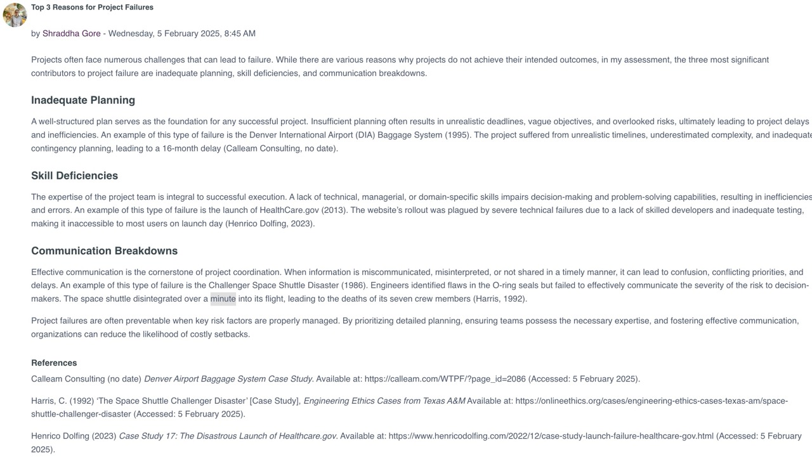

Unit 2: Why Projects Fail and Gathering Requirement
In unit 2, we looked at some reasons why projects fail and how to gather requirements.
We read a number of articles that covered the failure of large projects and used these examples to investigate the why they failed and what could have been done to mitigate failure. We also practiced requirements gathering using the Gherkin tool.Required Reading
- Olmsted, A. (2024) Security-Driven Software Development: Learn to Analyze and Mitigate Risks in Your Software Projects. Birmingham, England: Packt Publishing Ltd. Chapter 3.
- Behave (2020) Behaviour Driven Development: The Gherkin Language.
- Hossain, M. I. (2023) 'Software Development Life Cycle (SDLC) Methodologies for Information Systems Project Management', International Journal For Multidisciplinary Research, 5(5).
Unit Work
Collaborative Discussion - Peer Response 1
The second week of the collaborative discussion required us to reflect on and respond to a peer's initial post, adding comments about possible causes and mitigations of project failure. I responded to Shraddha's post:
Read the full response here.
Requirements Gathering
The second task of the unit was to read the Behaviour Driven Development (2020) pages on the Gherkin language and then create a Gherkin sequence that addresses one of the following examples:
- Using a new coffee making machine.
- Interfacing with a new SatNav system.
- Using a computer running the Linux operating system.
- Getting familiar with a new vehicle.
- Creating a batch or shell script.
I created a SatNav system. Details of which can be viewed here. The actual Gherkin specs can be seen in this GitHub Repo.